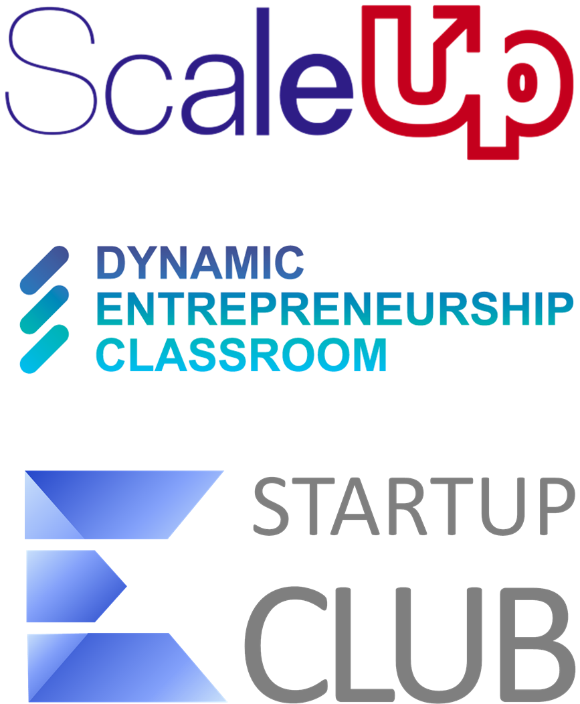

Center for Entrepreneurship Empowers Entrepreneurs Through Innovative Programs
ScaleUp Accelerator, Startup Club, and Dynamic Entrepreneurship Classroom Transforming the Entrepreneurial Landscape
nesen has been implementing diverse entrepreneurship programs since 2002. Key initiatives include the ScaleUp Accelerator for existing entrepreneurs, the Startup Club for new entrepreneurs, and the Dynamic Entrepreneurship Classroom. Such programs offer expert mentorship, resources, and networking opportunities critical for business growth. ScaleUp Accelerator offers a 9-month journey for active entrepreneurs with high growth potential through group training, interactive workshops, and mentorship sessions. The program aims to elevate participants' business performance and contribute to local entrepreneurial ecosystems. Startup Club is geared towards new entrepreneurs, providing crucial insights, practical skills, and industry connections essential for startups. Lastly, the Dynamic Entrepreneurship Classroom integrates entrepreneurial education into university curricula, helping students gain real-world skills and experiences needed to lead entrepreneurial ventures successfully. These programs not only benefit individual entrepreneurs but also stimulate the regional economy by promoting human capital development, creating jobs, and inspiring new projects.
Additional Information on Key Organizations
The Entrepreneurs' Organization (EO) is a global network that connects successful entrepreneurs to share experiences, expertise, and support. EO aims to foster entrepreneurial growth and provide a peer-to-peer learning environment. The Ewing Marion Kauffman Foundation is dedicated to advancing educational achievement and entrepreneurial success, offering resources, research, and programs that promote innovative and sustainable entrepreneurship practices. The Global Entrepreneurship Network (GEN) operates a platform of programs in 180 countries aimed at making it easier for anyone, anywhere to start and scale a business. GEN's initiatives encourage cross-border collaboration and foster a global entrepreneurial community.
